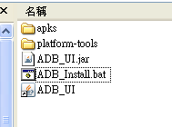
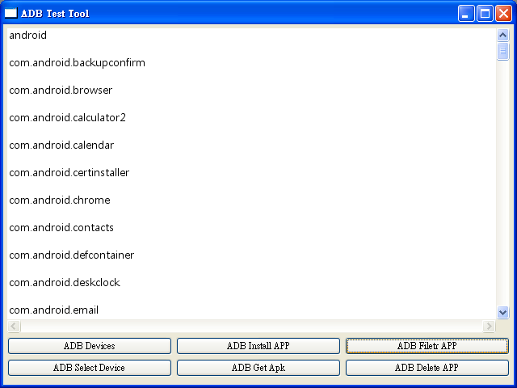

操作說明

首先解壓縮 ADB_Install.rar 檔案之後會得到圖上目錄
可以直接執行ADB_Install.bat或是捷徑ADB_UI
執行畫面
按下 "ADB Install APP" 按鈕後會跳出開啟檔案窗選擇到要安裝的 apk 檔案後按下開啟就能夠安裝
"ADB Filetr APP" 按鈕第一次按下時會顯示出所有的 packges，用滑鼠括選要過濾的關鍵字後再按一次
"ADB Filetr APP" 按鈕

然後會顯示出只有這關鍵字的 packges，用滑鼠將包裝名選擇後按下 "ADB Delete APP"
就能夠完成移除 APP

新增功能 "ADB Get Apk"

先點選 ADB Filter APP
接著用滑鼠選擇要取得的 apk 完整包名再點選 "ADB Get Apk" 按鈕
完成取得 apk 了! 顯示出請檢查檔案目錄的提示
在檔案目錄底下已經有了剛剛選取得的 apk 了!

選擇裝置之前先要把裝置給列出來

用滑鼠把裝置明稱選取後點 "ADB Select Device"
執行後畫面會出現裝置已經被選取，就可以執行其他各項功能操作